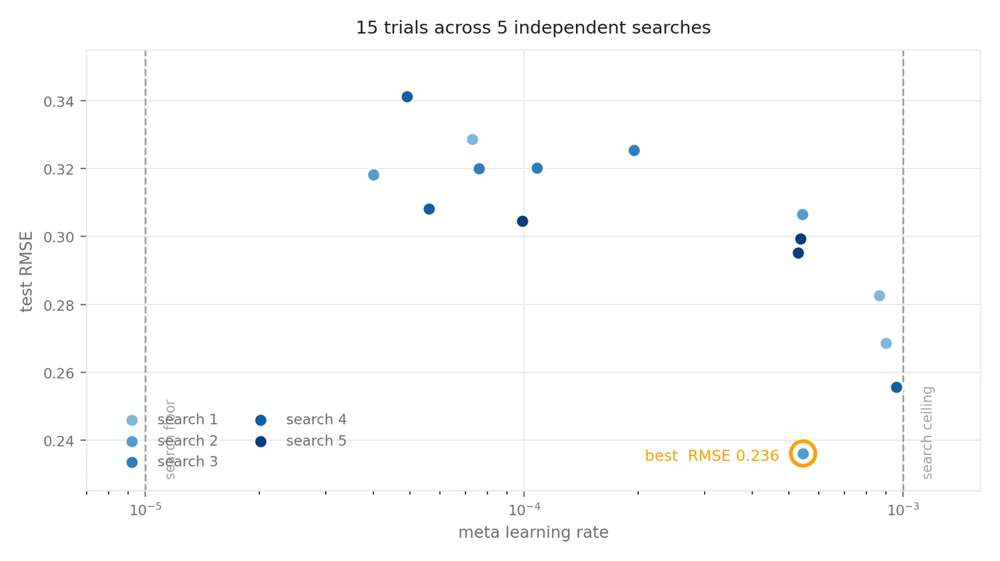
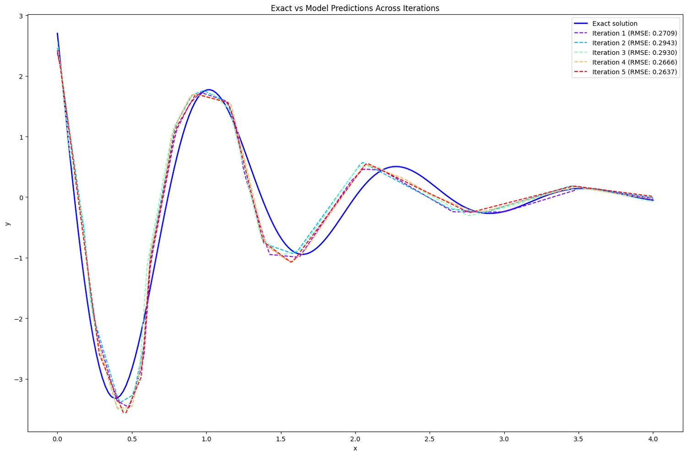

Handing one hyperparameter to a Bayesian optimiser, then reading what fifteen trials actually say — including the part where the search runs out of room.

A meta-learner has a learning rate for the inner loop and another for the outer one, and the outer rate is the awkward one: too small and the meta-update never moves the initialisation, too large and it undoes whatever the inner loop just learned. It is a bad parameter to guess and an expensive one to grid-search.
So this notebook does not guess. It wraps the whole training run in a KerasTuner HyperModel and lets Bayesian optimisation choose the meta learning rate, using held-out RMSE as the objective — then repeats the whole search five times to see how much of the answer is signal.
Small enough to run fifteen times, hard enough to be interesting.
The target is a damped oscillation, y = 5·e⁻ˣ·cos(5x + 1) over x ∈ [0, 4]. It is a good test function for this: the amplitude falls by a factor of fifty across the domain, so a network that fits the loud first swing can still be hopeless on the quiet tail, and a single RMSE number will notice.
Two tasks are drawn, each with 800 training points, and each task carries a support set and a query set — the split that makes a meta-learner a meta-learner. The support set is what the model adapts on; the query set is what the adaptation is judged by. A separate 200-point grid, never trained on, is the test set the tuner optimises against.
The network itself is deliberately small: two hidden layers of 32 units with ReLU, one output. Nothing about this problem needs more, and the point of the exercise is the optimiser, not the architecture.
Adapt fast, then nudge the starting point.
The inner loop is ordinary training. For each task the model is fitted to that task's support set with Adam at 1e-2 for 200 epochs — enough to drive the support loss down to around 0.01. This is the adaptation step: whatever the weights were, they are now specialised to this task.
The outer loop is where the learning rate under test does its work. The query sets are shuffled, batched and zipped so the tasks step together; the loss on each task's query batch is accumulated under a single gradient tape; and one SGD step at lr_meta is applied to the model's parameters. The question that step answers is not "what fits this task" but "what starting point would have made adapting to these tasks easier".
This is the first-order version of the idea. The inner fit runs through Keras rather than inside the tape, so no gradient flows back through the adaptation itself — the outer step sees the adapted weights, not the path taken to reach them. Second-order MAML would differentiate through that path, at a considerable cost in memory and time.
Bayesian optimisation, not a grid.
The meta learning rate is declared as a hyperparameter sampled logarithmically between 10⁻⁵ and 10⁻³ — log-scaled because what matters is the order of magnitude, not the linear distance. KerasTuner's Bayesian optimiser fits a surrogate over the trials it has seen, then proposes the next rate by balancing "where the model looks good" against "where the model is unsure", with an exploration weight of 2.6.
Each search takes two random starting points and three trials, and the whole search is repeated five times from scratch. Every trial is a full meta-training run, which is why fifteen of them cost three quarters of an hour.
Two answers, one of them about the search itself.
The best trial reached a test RMSE of 0.236 at a meta learning rate of 5.4×10⁻⁴, and the five final models landed between 0.264 and 0.294. But the useful result is not the winner — it is the shape of the cloud.
Error falls as the rate rises, with a correlation of −0.76 between the log rate and the RMSE. The four best trials all used a rate above 5×10⁻⁴; every single trial below 2×10⁻⁴ came in at 0.305 or worse. The winners are crowded against the right-hand wall.
That is the signature of a range set too low. The optimiser was not choosing an interior optimum, it was walking to the edge of the box it was given and stopping there. The honest reading of this run is not "the best meta learning rate is 5×10⁻⁴" — it is "the best rate is at least 10⁻³, and the experiment should be rerun with the ceiling lifted".
The second finding is about the budget. With two random initialisation points and three trials, only the final trial of each search is actually guided by the surrogate — the first two are random draws. And because each of the five repeats starts fresh, none of them inherits what the previous four learned.
So what looks like fifteen Bayesian trials is closer to ten random samples and five informed guesses. It is a fine way to measure variance, which is what repeating a search five times is for, but it never gives the Gaussian process enough history to model the landscape. One continuous fifteen-trial search would have spent the same forty-five minutes and actually converged.
Plotting the five final models against the exact curve shows the error is not spread evenly. All five track the large opening swing closely and all five agree on the flat tail — but they undershoot the peak near x = 1, overshoot the trough after it, and drift out of phase through the middle of the domain where the oscillation is fast and the amplitude is already shrinking.

That pattern says the remaining error is a capacity and resolution problem rather than a tuning one. Sixty-four hidden units spread across two layers have to represent five full oscillations whose amplitude spans two orders of magnitude, and the outer loop gets a single SGD step per trial to place the initialisation. Lifting the search ceiling is the cheap next move; widening the network and giving the meta-update more than one step is the real one.
y = 5·e⁻ˣ·cos(5x + 1) on [0, 4]1e-2, 200 epochs, batch 32, per task on the support setlr_meta on the summed query loss under a single tapelr_meta ∈ [10⁻⁵, 10⁻³], log-sampled5.4×10⁻⁴; optimum lies at or beyond the ceiling